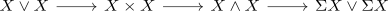

contractible smash product and contractible suspension
Proposition
- $X \wedge X$ is contractible
- $\Sigma X$ is contractible
Proof
consider the cofiber / coexact puppe sequence

1) $\implies$ 2)
Suppose $X \wedge X$ is contractible, then in particular it is also connected. Moreover, pi_0 preserves colimits which together with the cofiber sequence implies that $X$ is also connected. then pi_1 of a suspension of a path connected space implies that $\Sigma X$ is simply connected.
At last, we want to show that $\Sigma X$ is an acyclic space, which follows as $\tilde{\mathbb{S}}[X \wedge X] \simeq \tilde{\mathbb{S}}[X] \wedge \tilde{\mathbb{S}}[X]$ (cf. power functor on connective spectra is conservative).
2) $\implies$ 1)
Suppose $\Sigma X$ is contractible, then in particular, $X$ is acyclic and hence connceted (cf. acyclic space is connected). This implies that $X \wedge X$ is simply connected (cf. smash product of connected anima is simply connected) and hence it suffices to show that $X \wedge X$ is also acyclic (cf. nilpotent, acyclic space is contractible). This follows as $\tilde{\mathbb{S}}[X \wedge X] \simeq \tilde{\mathbb{S}}[X] \otimes \tilde{\mathbb{S}}[X]$ (cf. reduced suspension functor is symmetric monoidal).